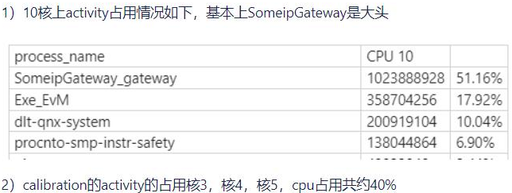

EOL calibration problem
1. Mode switch requires the ECU to restart, and it takes too long (the production line cannot be accurately evaluated for time, it is recommended to use the frame)
The default domain control brush is the factory mode. After the calibration is completed, the factory mode is switched to the normal mode.
If the repairs are re -calibrated, you need to switch from the normal mode to the factory mode, and the initial assessment exceeds 1min
Solution: Discuss the process with Chery, switch the factory mode to the normal mode to remove the calibration station in the short term, and the long -term solution is optimized or does not make a cold rest.
2. Soft and middleware systems are unstable
The two films are not synchronized, resulting in abnormal communication
After two times the NORMAL mode, ASW's Activity has not been pulled up
3. Always in calibration
ARA :: COM and Office_calib are randomly sequensed when starting, resulting in the diagnostic instructions that cannot be triggered by trigger calibration.
Camera Provider calls NV's get_packet () to get the image card to death, resulting in the calibration module of the downstream production line cannot be operated (only once sent once, it is not easy to reproduce, suspect the hardware connection problem or the problem of hardware connection or The CPU load is too high ）
